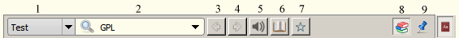

Besides main GoldenDict window with dictionary articles the small popup window can be used for rapid translation. This window can be called from other applications without switching to main GoldenDict window. It will be popup beside mouse cursor and will be automatically closed when cursor move away from it (if window for some reason don't close just click it and press "Esc" key). If popup window is enabled it will be shown in next cases:
- a) when hotkey was pressed;
- b) (under Windows and MacOS only) when mouse cursor placed over target word and scanning is turned on (scanning turned on/off by
 button on GoldenDict toolbar or via context menu of tray icon);
button on GoldenDict toolbar or via context menu of tray icon);Note: in some applications scanning may don't work
- c) (under Linux X11 only) when target word was selected and scanning is turned on;
- d) when clipboard was changed and scanning is turned on. To use this mode under Windows and MacOS it needs to turn on it via config file.
Popup window controls

1 - combobox to choose current dictionaries group
2 - search line with dropdown matches list
3, 4 - navigation buttons "Forward"/"Backward"
5 - pronunciation button. When it pressed the first pronunciation from articles will be played.
6 - button to transfer word to main window. When it pressed the main GoldenDict window will be activated and translated word will be placed into it search line.
7 - button to transfer word to Favorites (the icon will be blue if such word already presented in Favorites)
8 - turn on/off dictionaries bar button. When it pressed the vertical toolbar with dictionary icons shown at right side of popup window. To exclude dictionary from search you can just release button with it icon on this toolbar. If dictionary bar is turned off such dictionary muting don't work.
9 - pin button. When it pressed the popup window transform to ordinary application window and don't close when cursor moved away from it. In this mode you can resize window as you want. The new size will be preserved for next launch of GoldenDict.
If popup window is pinned the  button appears beside pin button. When this button is pressed the window will stay over all other windows.
button appears beside pin button. When this button is pressed the window will stay over all other windows.